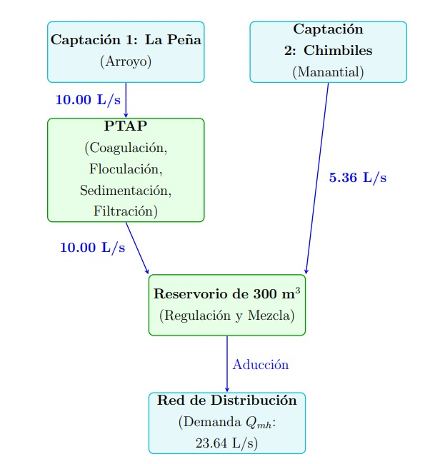

4. Informe de solicitud de licencia de uso de agua para el proyecto#
4.1. Introducción y marco normativo#
La disponibilidad de recursos hídricos constituye uno de los aspectos fundamentales para el desarrollo de proyectos de abastecimiento de agua potable. La ejecución del presente proyecto requiere garantizar el acceso legal y sostenible al recurso hídrico mediante la obtención de la correspondiente Licencia de Uso de Agua otorgada por la Autoridad Nacional del Agua (ANA).
La solicitud se fundamenta en la Ley N.° 29338 (Ley de Recursos Hídricos), la cual establece que las aguas son de propiedad del Estado. El diseño hidráulico y las estimaciones de demanda se rigen bajo los parámetros del Reglamento Nacional de Edificaciones (RNE), específicamente las Normas Técnicas OS.010 (Captación y conducción de agua para consumo humano) y OS.100 (Consideraciones básicas de diseño de infraestructura sanitaria) del Ministerio de Vivienda, Construcción y Saneamiento.
4.2. Ubicación y disponibilidad de la oferta hídrica#
La fuente de abastecimiento se ubica en el área de influencia de la localidad de Cascas (provincia de Gran Chimú, departamento de La Libertad). El sistema integral se abastece de dos fuentes independientes ubicadas en la parte alta de la cuenca, cuyo rendimiento en época de estiaje —reportado en el diagnóstico técnico base del proyecto— establece:
Captación 1 (Los Chimbiles): fuente de manantial de fondo con un rendimiento comprobado en época de estiaje de 6.00 L/s. Se diseña con un caudal de captación de 5.36 L/s (línea de conducción LC2).
Captación 2 (La Peña / Platanar): manantial con un rendimiento comprobado en estiaje de 10.00 L/s. Se diseña con un caudal de captación de 10.00 L/s (línea de conducción LC1).
La oferta hídrica total disponible en las condiciones más críticas (estiaje) asciende a 16.00 L/s, valor que respalda la solicitud de licencia frente a la demanda de diseño del sistema.
La localidad de Cascas se ubica a una altitud referencial de 1 279.315 m s. n. m. (cota de la plaza de armas), mientras que las captaciones y el trazado de las líneas de conducción se desarrollan a cotas superiores, entre 1 481 y 1 506 m s. n. m., conforme al levantamiento topográfico del proyecto. No corresponde aplicar ningún factor de escalamiento a esta información topográfica: las cotas de diseño empleadas en el dimensionamiento de las líneas de conducción, aducción y red de distribución son las obtenidas directamente del levantamiento de campo, sin reescalamientos artificiales que alteren la carga estática disponible.
4.3. Determinación y sustento de la demanda de agua#
Para garantizar la resiliencia y funcionalidad del sistema durante su horizonte de diseño, la demanda de agua se calculó a partir de la población de diseño, la dotación adoptada y los coeficientes de variación diaria y horaria del consumo. La demanda del sistema es exclusivamente de tipo poblacional; no se considera ni se asigna caudal de las fuentes para uso industrial (ver aclaración en el literal D).
A. Población de diseño. La proyección de la población parte de la serie censal urbana oficial del INEI (1993, 2005, 2007 y 2017), corregida mediante un factor de mayoración \(K = 1.15\) para compensar el subregistro censal típico de zonas dispersas. Sobre esta serie corregida se ajustaron cinco modelos de crecimiento (lineal, potencial, exponencial, logarítmico y polinómico de segundo grado), seleccionándose el modelo polinómico de segundo grado por dos razones: (i) presenta el mejor coeficiente de determinación de todos los modelos evaluados (\(R^{2} = 0.886\), frente a 0.847–0.849 de los demás); y (ii) es el más coherente con el contexto local, ya que la instalación de una planta industrial de leche en la zona actúa como polo de atracción de población y empleo, generando una tendencia de densificación urbana que el modelo polinómico captura mejor que los modelos de tendencia lineal.
Es importante precisar que la planta industrial de leche no demanda ni consume agua de las fuentes de captación del presente sistema: su único efecto sobre el diseño es demográfico (atracción de población), lo cual se refleja en la selección del modelo de proyección poblacional, y no en un caudal adicional de diseño. Bajo este criterio, la población de diseño adoptada para el horizonte de 20 años (año 2046) es de 6 807 habitantes.
B. Justificación del consumo diario (dotación de 150 L/hab/día). Para el cálculo del Caudal Medio Diario (\(Q_m\)) se evaluaron dos referencias normativas:
La Norma Técnica OS.100 asigna, para climas cálidos secos con lotes mayores a 90 m², una dotación de 180 L/hab/día.
El criterio de SEDAPAL para el nivel socioeconómico D (aplicable a Cascas, donde predomina una economía de subsistencia con un ingreso promedio mensual del orden de S/ 550 en el área urbana) asigna una dotación de 150 L/hab/día.
El criterio del RNE, basado únicamente en clima y tamaño de lote, no recoge el nivel de consumo efectivo de una población de economía de subsistencia. El criterio de SEDAPAL, al incorporar el nivel socioeconómico, resulta más representativo del consumo real de Cascas. Por ello se adopta una dotación de diseño de 150 L/hab/día.
Con estos parámetros, el caudal promedio poblacional se calcula mediante:
C. Coeficientes de variación diaria y horaria. El RNE exige amplificar el caudal promedio mediante coeficientes de variación para las condiciones más exigentes de consumo:
Variación diaria (\(K_1 = 1.3\)). Representa el día del año de mayor demanda. El sistema de captación, conducción, planta de tratamiento, aducción y el propio reservorio se dimensionan con el Caudal Máximo Diario:
Variación horaria (\(K_2 = 2.0\)). Representa la hora punta de mayor consumo del día crítico. La línea de alimentación de la red y la propia red de distribución se dimensionan obligatoriamente con el Caudal Máximo Horario, con el fin de garantizar una presión dinámica mínima adecuada en los domicilios más alejados:
D. Aclaración sobre la planta industrial de leche. El expediente base no asigna caudal alguno de las fuentes de captación a la industria láctea proyectada en la zona. La planta se abastecerá por medios propios, ajenos al presente sistema de agua potable poblacional, y su presencia en el diagnóstico socioeconómico del proyecto se limita a explicar la aceleración del crecimiento poblacional recogida por el modelo polinómico de proyección (literal A). En consecuencia, no existe demanda industrial que descontar de la oferta hídrica disponible, y toda la oferta de 16.00 L/s en estiaje respalda exclusivamente el uso poblacional del sistema.
4.4. Balance hídrico y viabilidad técnica#
Para que la ANA otorgue la licencia, el sistema debe demostrar numéricamente que la oferta hídrica de los manantiales en la época más seca del año es superior a la demanda máxima diaria poblacional, único uso considerado en el presente proyecto.
Parámetro |
Caudal (L/s) |
Volumen anual equivalente (m³) |
|---|---|---|
Oferta total de la fuente (estiaje) |
16.00 |
504 576.00 |
Demanda máxima diaria poblacional (\(Q_{md}\)) |
15.36 |
484 392.96 |
Balance (superávit / reserva ecológica) |
+0.64 |
20 183.04 |
Tabla 4.1. Balance hídrico crítico del sistema proyectado (uso exclusivamente poblacional).
Como se evidencia en la Tabla 4.1, la oferta constante en época de estiaje (16.00 L/s) supera la demanda máxima diaria poblacional (15.36 L/s), dejando un remanente de +0.64 L/s, que se mantendrá como caudal ecológico mínimo fluyendo en las quebradas de origen. Esta demostración confirma la sostenibilidad técnica del requerimiento, haciendo factible la emisión de la Licencia de Uso de Agua para uso poblacional.
La selección de las fuentes se realizó considerando la disponibilidad permanente del recurso, la calidad adecuada para tratamiento de potabilización, la facilidad de captación, la cercanía al área de servicio y la viabilidad técnica y económica de conducción. La disponibilidad hídrica se evaluó a partir del caudal disponible en estiaje, la variación estacional, las condiciones hidrológicas de la cuenca, la existencia de usuarios aguas arriba y abajo, y los requerimientos ambientales mínimos, garantizando que la extracción propuesta sea inferior al caudal disponible. El uso solicitado se clasifica íntegramente dentro de la categoría de uso poblacional, conforme a la Ley de Recursos Hídricos y las disposiciones de la ANA. La normativa establece que toda utilización permanente de agua destinada al abastecimiento poblacional debe contar con la respectiva licencia otorgada por la autoridad competente.
4.5. Esquema explicativo del sistema#
A continuación, se presentan los esquemas unifilares y conceptuales que detallan la captación y la disposición del recurso hídrico solicitado para uso poblacional.

Figura 4.1. Esquema hidráulico del sistema de abastecimiento de agua potable.